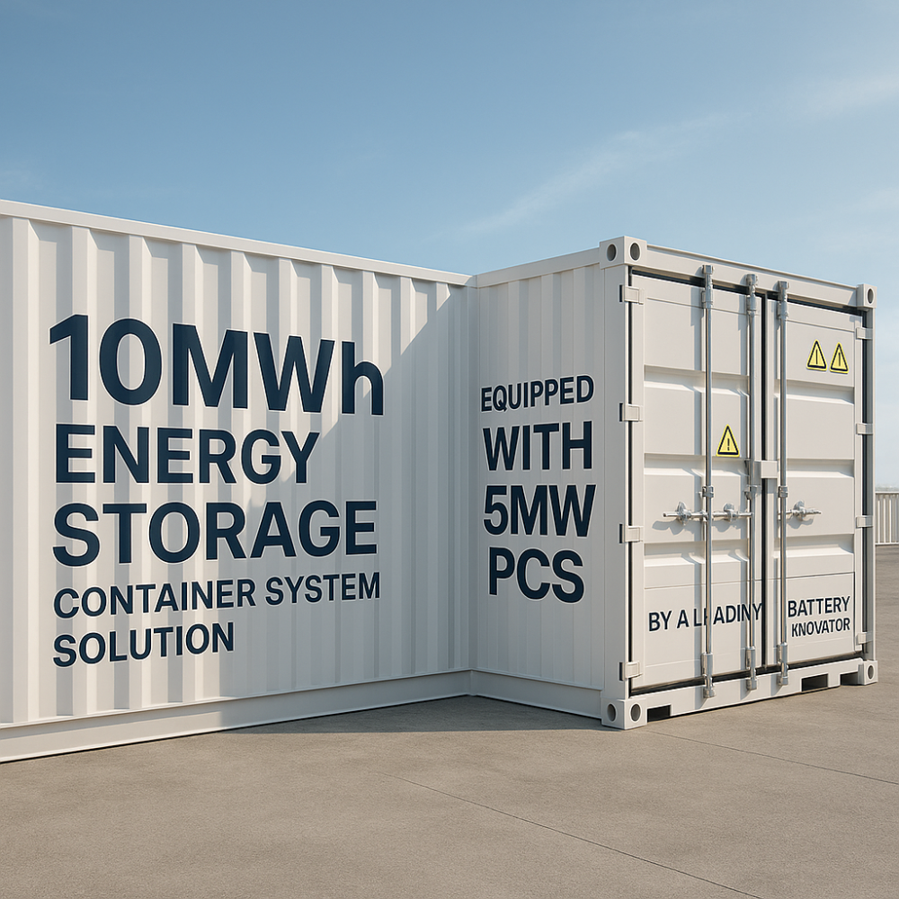
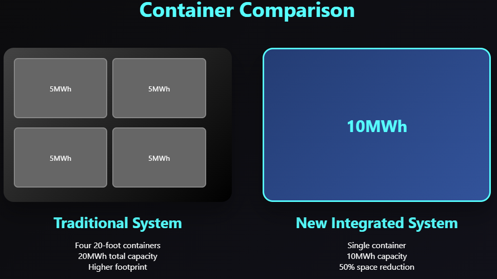
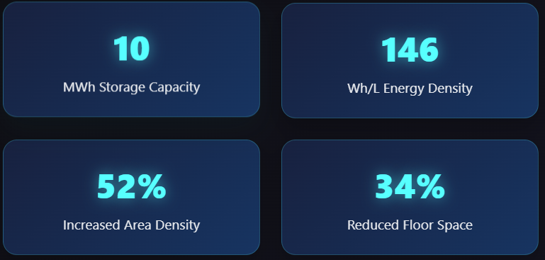
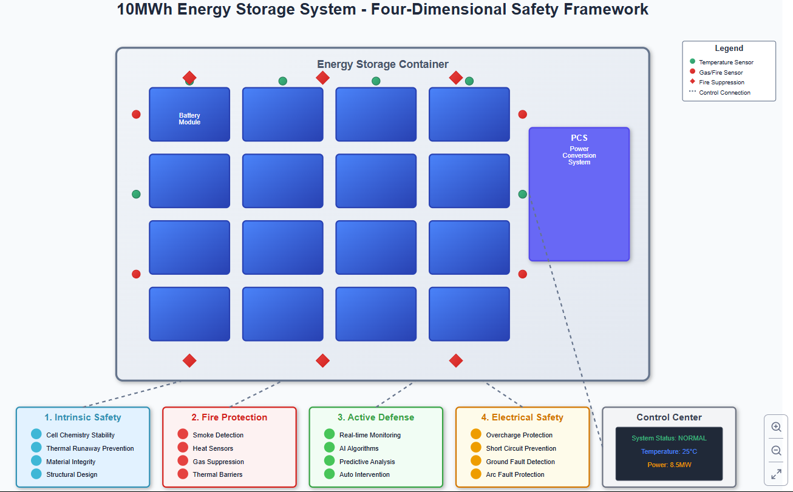
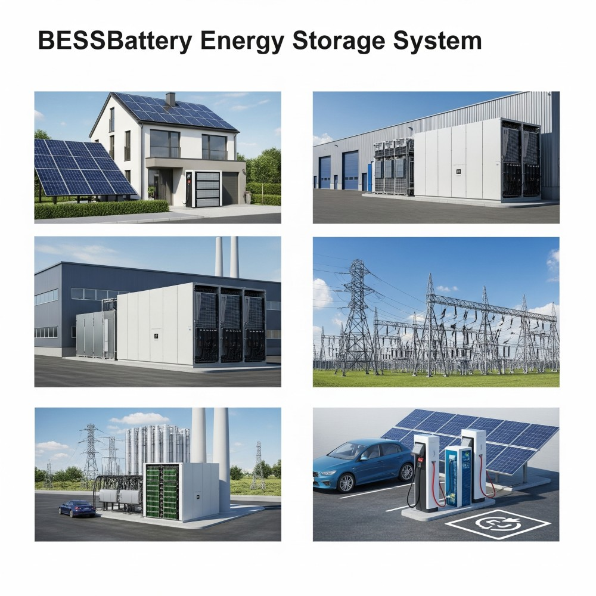
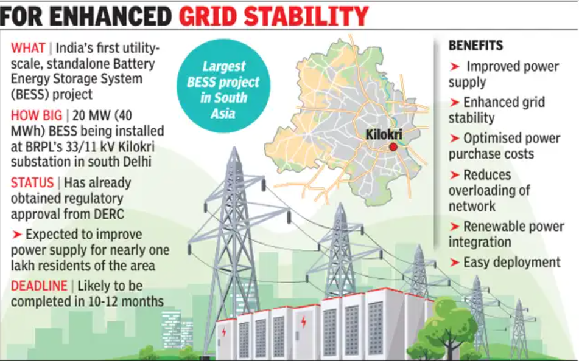
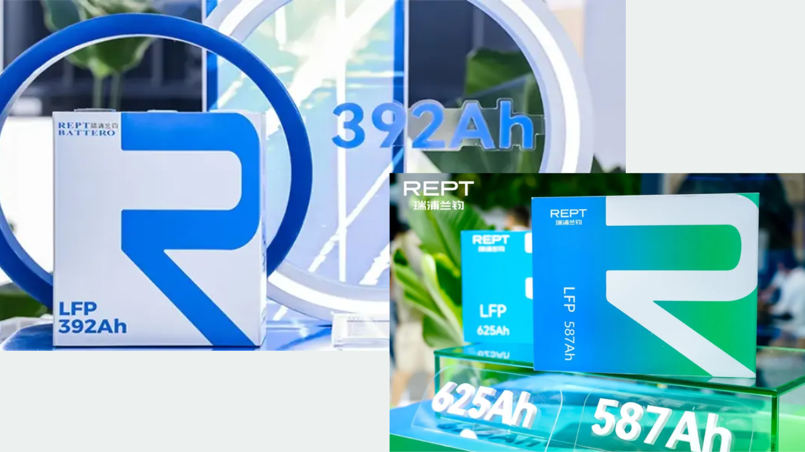
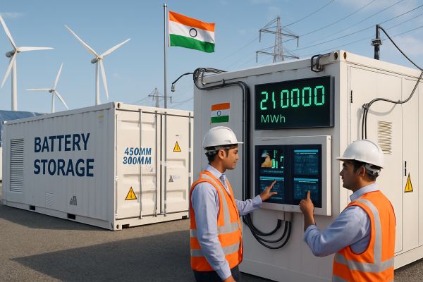

The global energy landscape is undergoing a profound transformation, with a decisive shift towards renewable sources and a burgeoning demand for robust energy storage solutions. In this dynamic environment, the recent launch of a 10MWh energy storage container system solution by a leading battery innovator marks a pivotal moment.
Equipped with a 5MW Power Conversion System (PCS) AC system, this sophisticated solution represents a holistic optimization across key performance indicators: system cost, energy density, deployment efficiency, safety standards, and cycle life. This innovation is not merely an incremental improvement; it signifies a significant stride towards enabling the global energy technology field, including India, to truly enter the gigawatt (GW) era of energy storage.

Compared to existing energy storage systems, typically offering around 6.25MWh of capacity, this new 10MWh container stands out due to its superior integration, enhanced AC matching capabilities, and remarkable adaptability. These features allow it to meet the diverse application needs of a wider range of scenarios, from utility-scale grids to decentralized microgrids.
Ushering in the 10M Era for Single Container Systems
This new offering is a true industry first: an integrated single-container system boasting an unprecedented storage capacity of 10MWh. This is made possible by an impressive volume energy density reaching 146 Wh/L. The system's innovative modular design facilitates rapid and large-scale deployment, offering an exceptionally efficient solution for the construction of multi-gigawatt-hour (GWh) energy storage power stations.

A key advantage lies in its spatial efficiency. Compared to traditional 20-foot 5MWh container systems, this 10MWh solution achieves a significant leap in energy density per unit area. This drastically reduces the physical footprint required, leading to substantial savings in land investment costs and initial site development expenses. The ingenious back-to-back "field" layout design further maximizes space utilization.

For instance, when configuring a 100MWh energy storage power station, utilizing this advanced system can increase energy density per unit area by an astounding 52% and concurrently reduce the required floor space by 34% compared to conventional container arrangements. Such efficiencies are paramount for the rapid, cost-effective, and scalable deployment of large-scale energy storage projects, particularly in land-constrained regions like parts of India.
Four-Dimensional Security: The Cornerstone of Reliable Energy
As the energy density of battery cells and systems continues its upward trajectory, battery safety unequivocally becomes the cornerstone of any reliable energy storage solution. This 10MWh energy storage system incorporates a comprehensive "four-dimensional safety" protection framework, meticulously designed to ensure the stable and healthy operation of the system under all conditions:

- Intrinsic Safety: This dimension focuses on the fundamental chemical and structural integrity of the battery cells themselves, inherently minimizing the risk of thermal events or chemical instability.
- Four-Fold Fire Protection: The system integrates multiple layers of advanced fire detection and suppression mechanisms, ensuring swift containment and mitigation should any thermal incident occur.
- Active Defense: Employing sophisticated sensors, real-time monitoring, and intelligent algorithms, the system actively assesses operational parameters, proactively identifying potential risks and enabling early intervention and precise regulation.
- Electrical Safety: Comprehensive electrical protection measures are built in to prevent common issues such as overcharge, short circuits, and ground faults, safeguarding both the equipment and operational personnel.
To optimally complement this ultra-large capacity energy storage system, the innovator concurrently launched new 392Ah and 587Ah energy storage cells. Both cell types boast high volume energy densities (409 Wh/L and 438 Wh/L respectively) and exceptionally long cycle lives, ensuring efficient and long-lasting operation of the energy storage system. These cells have undergone rigorous safety tests, including thermal runaway, overcharge, and short circuit evaluations, consistently demonstrating a critical safety feature: they will not catch fire or explode. This robust safety profile ensures full coverage and adaptability for various power energy storage system scenarios, including the prevalent 2-hour and 4-hour rate segmented applications.
Intelligent Management: Enabling Smart Energy for Every Scenario
At the heart of this advanced energy storage system lies an intelligent management platform powered by big data analytics and an AI decision-making engine. This creates a sophisticated three-level intelligent center: "cloud-edge-end." This architecture facilitates seamless end-to-cloud interconnection and intelligent management and control directly at the energy storage system level. Through panoramic monitoring and intelligent early warning functions, the system conducts comprehensive real-time surveillance of all operational parameters. In the event of any abnormality, the system can respond with remarkable speed, performing remote diagnostics and implementing precise regulation without delay. This data-empowered decision-making provides robust support for system operations, helps achieve maximum benefits, simplifies operations, and ultimately ensures the safe, efficient, and stable performance of the energy storage system across its lifespan.

Beyond the core containerized solution, the company's lithium battery energy storage technology team has developed a versatile portfolio of scenario-specific products, addressing a wide spectrum of power applications:
- Household Energy Storage Systems: Designed for residential consumers, these systems seamlessly integrate with rooftop solar photovoltaic (PV) installations. They store excess solar power generated during the day, making it available for use at night or during grid outages, thereby significantly improving household energy self-sufficiency and reducing electricity bills.
- Industrial and Commercial Energy Storage Systems: Tailored for diverse environments such as factories, shopping malls, and office buildings, these systems leverage intelligent peak-shaving and valley-filling mechanisms. This helps businesses optimize their electricity consumption patterns, reduce peak demand charges, and provides critical backup power, ensuring operational continuity and reducing overall energy costs.
- Large-Scale Energy Storage: These solutions are designed for grid-level applications and integration with new energy power generation facilities. Large-scale energy storage power stations are instrumental in achieving critical grid functions like peak shaving, frequency regulation, and smoothing out the inherent intermittency of renewable energy sources, thereby enhancing overall power grid stability and reliability.
- Integrated Photovoltaic, Storage, and Charging Systems: This innovative solution deeply integrates solar power generation, energy storage, and electric vehicle (EV) charging pile functionalities. It creates a closed loop of efficient clean energy utilization within charging stations, commercial parks, and other similar scenarios, promoting a sustainable and interconnected energy ecosystem.

Through this comprehensive full-scenario technology coverage and ecological integration, the company continues to play a vital role in empowering the transformation of the global energy structure.
Indias Energy Transition and the Promise of Advanced Storage Solutions
India is on an aggressive trajectory towards decarbonizing its energy sector and boosting electric vehicle adoption. The government's ambitious targets for renewable energy capacity addition, coupled with policies like the National Green Hydrogen Mission and the Production Linked Incentive (PLI) scheme for Advanced Chemistry Cell (ACC) battery manufacturing, underscore the nation's commitment. However, the intermittent nature of renewables (solar and wind) necessitates robust energy storage solutions to ensure grid stability and round-the-clock power supply.
Here's how advanced containerized solutions like the 10MWh system fit into India's evolving energy landscape:
- Bridging the Renewable Energy Gap: India is rapidly adding solar and wind capacity. Projects like the recent 20 MW/40 MWh BESS in New Delhi, the largest of its kind in South Asia, demonstrate the growing importance of standalone battery storage for grid stability. The 10MWh container, with its higher integration and efficiency, offers a scalable and quicker deployment solution for similar projects, helping to firm up renewable power and integrate it seamlessly into the national grid.

- Optimizing Land Use and Cost: Given India's population density and often constrained land availability, the significant reduction in floor space (34% less for a 100MWh station compared to traditional systems) offered by this new 10MWh unit is a massive advantage. Lower land investment costs directly contribute to more economically viable projects, aligning with India's focus on affordable and accessible clean energy.
- Enhanced Safety Protocols: With increased energy density comes heightened safety considerations. The "four-dimensional safety" framework, including intrinsic safety and advanced fire protection, is crucial for India's diverse climatic conditions and crowded urban environments. Ensuring non-flammable and non-explosive cells, as demonstrated by the new 392Ah and 587Ah cells, is paramount for widespread acceptance and deployment.

- Decentralized and Grid-Edge Applications: Beyond utility-scale, India's large geographical spread and varying energy demands make decentralized and grid-edge solutions highly relevant. The modularity and intelligent management capabilities of such containerized systems can support microgrids in remote areas, reinforce distribution networks, and enable localized peak shaving for industrial and commercial consumers, reducing strain on existing infrastructure.
- EV Charging Infrastructure: While the article primarily focuses on grid-scale storage, the concept of integrated photovoltaic, storage, and charging systems holds immense potential for India's burgeoning EV market. As EV adoption accelerates, establishing reliable and fast-charging infrastructure becomes critical. Integrating solar generation and battery storage at charging hubs can provide cleaner, more stable power for EVs, especially in areas with grid limitations.
- Domestic Manufacturing and Innovation: Indian companies like TATA POWER SOLAR pvt ltd , Powerzone Batteries By AMARA RAJA Batteries Ltd. , Exide Industries Limited , and startups like Log9 Materials are actively investing in lithium-ion battery manufacturing and R&D. While a 10MWh fully integrated containerized solution might be a leap from current domestic offerings, the principles of high energy density, modularity, and advanced safety will undoubtedly influence future indigenous developments. Collaborations and technology transfers could accelerate India's journey towards producing such advanced systems locally.

- Scaling Up Energy Storage Targets: India has ambitious goals for energy storage deployment. Projects involving capacities exceeding 450MW/900MWh, with a total application scale exceeding 21,000MWh (21GWh) globally for this innovator, highlight the scale at which such advanced containerized solutions can contribute to India's energy security and sustainability.
This leap in unit capacity, from 21GWh total application scale to 10MWh per unit, is more than just a numerical advancement. It stems from practical experience gained across diverse application scenarios. Through continuous technological iteration, this innovator is not only expanding the capabilities of the "energy storage unit" but also fundamentally reconstructing the logic of power station design. This groundbreaking approach promises to deliver uninterrupted green electricity, providing an inexhaustible source of power for the global energy transformation, and significantly contributing to India's journey towards a cleaner, more reliable, and sustainable energy future.